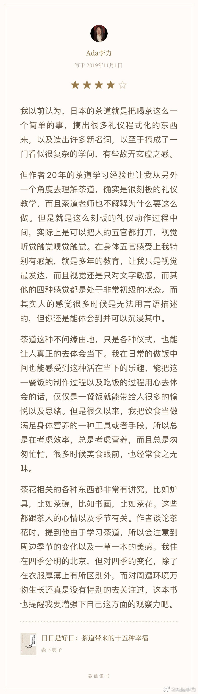

#不明所以#
很快翻完了《日日是好日》这本书
我以前认为，日本的茶道就是把喝茶这么一个简单的事，搞出很多礼仪程式化的东西来，以及造出许多新名词，以至于搞成了一门看似很复杂的学问，有些故弄玄虚之感。
但作者20年的茶道学习经验也让我从另外一个角度去理解茶道，确实是很刻板的礼仪教学，而且茶道老师也不解释为什么要这么做。但是就是这么刻板的礼仪动作过程中间，实际上是可以把人的五官都打开，视觉听觉触觉嗅觉触觉。在身体五官感受上我特别有感触，就是多年的教育，让我只是视觉最发达，而且视觉还是只对文字敏感，而其他的四种感觉都是处于非常初级的状态。而其实人的感觉很多时候是无法用言语描述的，但你还是能体会到并可以沉浸其中。
茶道这种不问缘由地，只是各种仪式，也能让人真正的去体会当下。我在日常的做饭中间也能感受到这种活在当下的乐趣，能把这一餐饭的制作过程以及吃饭的过程用心去体会的话，仅仅是一餐饭就能带给人很多的愉悦以及思绪。但是很久以来，我把饮食当做满足身体营养的一种工具或者手段，所以总是在考虑效率，总是考虑营养，而且总是匆匆忙忙，很多时候美食眼前，也经常食之无味。
茶花相关的各种东西都非常有讲究，比如炉具，比如茶碗，比如书画，比如茶花。这些都跟茶人的心情以及季节有关。作者谈论茶花时，提到他由于学习茶道，所以会注意到周边季节的变化以及一草一木的美感。我住在四季分明的北京，但对四季的变化，除了在衣服厚薄上有所区别外，而对周遭环境万物生长还真是没有特别的去关注过，这本书也提醒我要增强下自己这方面的观察力吧。
很快翻完了《日日是好日》这本书
我以前认为，日本的茶道就是把喝茶这么一个简单的事，搞出很多礼仪程式化的东西来，以及造出许多新名词，以至于搞成了一门看似很复杂的学问，有些故弄玄虚之感。
但作者20年的茶道学习经验也让我从另外一个角度去理解茶道，确实是很刻板的礼仪教学，而且茶道老师也不解释为什么要这么做。但是就是这么刻板的礼仪动作过程中间，实际上是可以把人的五官都打开，视觉听觉触觉嗅觉触觉。在身体五官感受上我特别有感触，就是多年的教育，让我只是视觉最发达，而且视觉还是只对文字敏感，而其他的四种感觉都是处于非常初级的状态。而其实人的感觉很多时候是无法用言语描述的，但你还是能体会到并可以沉浸其中。
茶道这种不问缘由地，只是各种仪式，也能让人真正的去体会当下。我在日常的做饭中间也能感受到这种活在当下的乐趣，能把这一餐饭的制作过程以及吃饭的过程用心去体会的话，仅仅是一餐饭就能带给人很多的愉悦以及思绪。但是很久以来，我把饮食当做满足身体营养的一种工具或者手段，所以总是在考虑效率，总是考虑营养，而且总是匆匆忙忙，很多时候美食眼前，也经常食之无味。
茶花相关的各种东西都非常有讲究，比如炉具，比如茶碗，比如书画，比如茶花。这些都跟茶人的心情以及季节有关。作者谈论茶花时，提到他由于学习茶道，所以会注意到周边季节的变化以及一草一木的美感。我住在四季分明的北京，但对四季的变化，除了在衣服厚薄上有所区别外，而对周遭环境万物生长还真是没有特别的去关注过，这本书也提醒我要增强下自己这方面的观察力吧。
- 